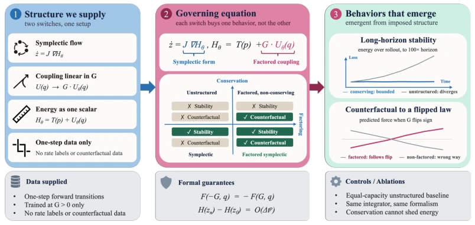
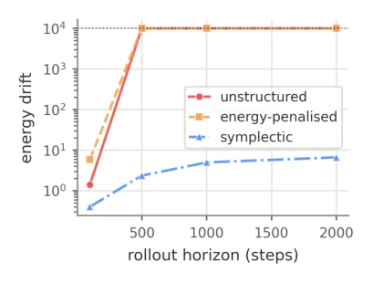
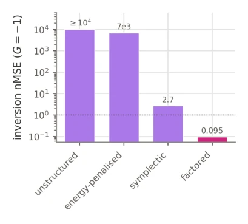
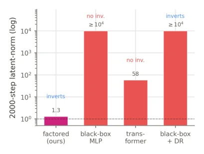
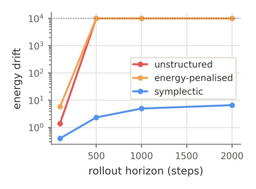
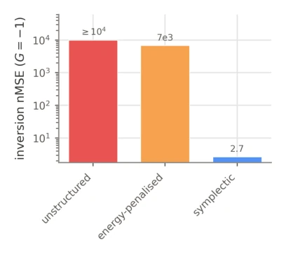
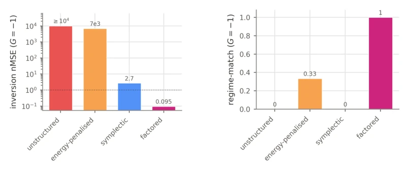
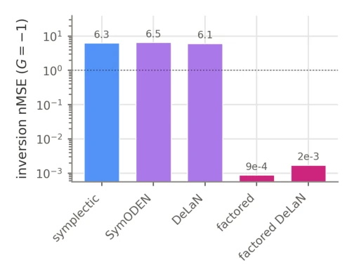
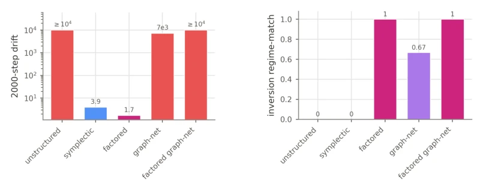
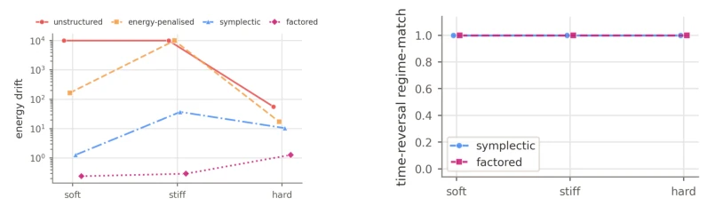

This paper pours cold water on the physical world modeling community: Don't assume adding energy conservation can conquer the world, nor assume that linear decomposition of parameters can solve all problems. The authors prove with extremely hardcore "dual separation" experiments, that long-term stability relies on the energy geometry preserved by symplectic integrators, while counterfactual generalization (e.g., gravity reversal) relies on explicit linear factorization. These two are like the left and right brains, mutually non-interfering. Most ironically, existing mainstream models either drift like a mad dog in long rollouts, or stubbornly adhere to the "dogma" of training data during gravity reversal, fundamentally not understanding what "physical laws changed" means. Although the conclusion is clear, the authors also honestly admit, this approach hasn't fully worked in real pixel videos yet, and is not applicable to dissipative systems (such as friction). This is like equipping a car with an anti-lock braking system (stability) and a reverse radar (counterfactual), but without an engine (dissipation), the car still cannot run far.
研究动机Motivation
当前学习到的模拟器（Learned Simulators）存在两个致命缺陷：一是长时程预测中误差累积导致轨迹漂移，失去物理合理性；二是当物理参数（如重力方向）发生训练集未见的干预时，模型无法泛化，依然遵循训练时的定律。现有工作如 Hamiltonian Neural Networks (HNN) (Greydanus et al., 2019) 和 Graph Network Simulators (Sanchez-Gonzalez et al., 2020) 虽然引入了结构化先验，但未能明确区分哪些结构负责稳定性，哪些负责反事实泛化。例如，在 PhyWorldBench (Gu et al., 2025) 等基准中，模型常因“反物理”行为失败。本文旨在解决这一归因模糊问题，通过受控实验证明：能量守恒仅带来稳定性，而因子化耦合才带来反事实泛化，两者缺一不可且互不替代。
Current learned simulators (Learned Simulators) have two fatal flaws: first, error accumulation in long-term prediction leads to trajectory drift, losing physical rationality; second, when physical parameters (such as gravity direction) undergo interventions unseen in the training set, the model cannot generalize and still follows the laws at training time. Existing works such as Hamiltonian Neural Networks (HNN) (Greydanus et al., 2019) and Graph Network Simulators (Sanchez-Gonzalez et al., 2020) although introducing structured priors, failed to clearly distinguish which structures are responsible for stability and which for counterfactual generalization. For example, in benchmarks such as PhyWorldBench (Gu et al., 2025), models often fail due to "anti-physical" behaviors. This paper aims to solve this attribution ambiguity problem, proving through controlled experiments that energy conservation only brings stability, while factorized coupling brings counterfactual generalization, both are indispensable and not interchangeable.

Figure 1: Overview of the two pieces of physical structure we impose (left), the double dissociation they produce (centre), and how each behaviour is measured and bounded (right and bottom).
The overall framework adopts a "Structured Commitment" strategy, explicitly encoding physical priors into the model architecture, rather than relying on implicit learning from data. The pipeline is divided into two stages: state prediction and iterative rollout. The core innovation lies in two independent structural modules: 1. Energy Conservation Module: Uses a Symplectic Integrator (e.g., Leapfrog) to evolve the learned Hamiltonian $H_\theta$. According to Proposition 1, although this update does not strictly conserve physical energy, it conserves the corrected Hamiltonian, thereby keeping trajectories bounded within long-term (100 times training steps) and preventing drift. 2. Factorized Coupling Module: Explicitly decomposes interaction forces into $F_i = -G \frac{\partial}{\partial q_i} U_\theta(q)$, where the coupling parameter $G$ enters the potential function in linear form. According to Proposition 2, this construction forces the force to be an odd function with respect to $G$, enabling the model to automatically reverse the direction of force under unseen $G<0$ (repulsion) regimes without training data support. Experiments use a "Dual Separation" design (Matched Controls), removing or replacing these two components one by one, comparing against baselines such as unstructured MLP, energy penalty models, Neural ODE, etc., strictly verifying the independent contributions of each component to stability and counterfactual generalization.
Experiments are based on a soft-core three-body gravity system (Three-body gravity), the training set only contains $G>0$ (attraction) data, the test set includes $G<0$ (repulsion) and long-term (2000 steps) stability. Baselines include unstructured MLP, energy penalty MLP, Neural ODE (RK4), and non-factorized symplectic models. Evaluation metrics are energy drift $D(t)$ and counterfactual match $RM$. Results show: Only Symplectic models remain bounded within 2000 steps, but cannot reverse gravity ($RM=0$); Only factorized models can reverse gravity ($RM=1$), but diverge in the long term; Only the "Factorized Symplectic Model" possesses both stability and counterfactual capabilities. Ablation experiments prove that increasing capacity, changing integrators, or altering forms (such as DeLaN, SymODEN) cannot replace the aforementioned structures. Additionally, in pixel-aware settings (VideoMAE, V-JEPA2), this pattern remains effective, but is limited by the accuracy of momentum inference.

Figure 2: Long-horizon energy drift (log scale, capped at 104).

Figure 3: Inversion error at G = −1; only the factored model falls below nMSE 1.

Figure 4: Stronger baselines on the sign flip: 2000-step latent-norm (stability, log), with each model’s inversion outcome marked.
其他图片Other Figures

Figure 5: Relative energy drift D(t) vs rollout step (log y, 3 seeds; the shaded band is the plotting normal-approximation interval, descriptive at three seeds) in the original three-model display. The unstructured MLP and energy-penalised model reach the 104 display cap by ∼step 300; the sym- plectic model plateaus. Numerical summaries are taken from the raw record (Table 6), not from this capped display.

Figure 6: Non-factored HNN: stable but does not invert; repulsive rollout matches the attractive default.

Figure 7: Factored HNN tracks the true reversed (G < 0) reference trajectory; the other evaluated models diverge or remain closer to the training-law trajectory.

Figure 8: DeLaN/SymODEN. Inversion across five structured models: non-factored fail (match 0), factored invert (match 1), all equally stable.

Figure 9: Graph-network long-horizon failure and reported response labels. The labels require separate short-horizon validity checks before being interpreted as counterfactual success.

Figure 10: Contact stiffness series: bounded energy and surviving symmetry-inversion where un- constrained models diverge.